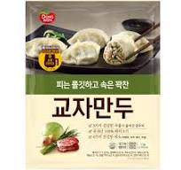

개요
사업을 시작하게 된 계기는 대학입시가 끝나고, 고등학교를 졸업하기 직전에 친구의 형이 중고차 장사를 하는데 거기서 처음으로 호객행위 아르바이트를 시작하면서 라고 한다. 그런데 이 호객행위가 너무 단순했으며, 막상 이렇게 손님을 불러와도 안에서 딜러들이 설명을 너무 못하고, 손님이 어떤 차를 원하는지 바로 알아채지 못해서 본인이 직접 알려줘도 딴소리를 하면서 손님을 놓치는게 답답한 나머지 직접 딜러를 하겠다고 제안했다고 한다. 그래서 딜러로 일하기 시작한지 40분 만에 차를 파는 데 성공하고 며칠 만에 차를 6대나 팔았다고 한다. 그런데 2번째로 차를 사간 손님이 미터기 조작과 사고 경력이 있었다는 것을 깨닫고, 이를 모르고 팔았던 백종원의 뺨을 그대로 후려쳤다고 한다.[30] 거기에 충격을 받아서 자동차를 공부해야 한다는 것을 깨달았지만, 거기까지는 의욕이 없어서 더는 하지 않았다고 한다. 이 사건을 계기로 장사에 대한 철학이 필요하다는 것을 깨달았다고. 빨리 그만둔 이유는 다른 구매자들도 따지러 올까봐 그랬다고 한다. 그래도, 백종원이 자동차를 좋아하고 장사수완을 익히는 계기가 된 것은 이때의 경험이 큰 도움이 된 모양이다.